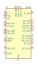
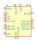
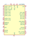
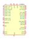
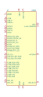

| Symbol |
Description |

BC66 | Description: Quectel NB-IoT Global, AT Command Set
Keys: NB-IoT Data SMS
Datasheet: https://www.quectel.com/UploadImage/Downlad/Quectel_BC66_Hardware_Design_V1.1.pdf |

BC95 | Description: NB-IoT, GSM Quad-Band Communication Module, GPRS, Audio Engine, AT Command Set
Keys: NB-IoT GSM GPRS Quad-Band SMS
Datasheet: https://www.quectel.com/UploadImage/Downlad/Quectel_BC95_Hardware_Design_V1.3.pdf |
M95 | Description: Quectel quad-band GSM/GPRS module in LCC package
Keys: GSM GPRS AT SMS voice TCP/IP
Datasheet: https://www.quectel.com/UploadImage/Downlad/M95_Hardware_Design_V1.3.pdf |
SARA-U201 | Description: Ublox HSPA GSM Quad-Band Communication Module, AT Command Set, AT Command Set, Worldwide , LGA-96
Keys: GSM HSPA 2G 3G
Datasheet: https://www.u-blox.com/sites/default/files/SARA-U2_DataSheet_(UBX-13005287).pdf |
SARA-U260 | Description: Ublox HSPA GSM Quad-Band Communication Module, AT Command Set, Designed for America, LGA-96
Keys: GSM HSPA 2G 3G
Datasheet: https://www.u-blox.com/sites/default/files/SARA-U2_DataSheet_(UBX-13005287).pdf |
SARA-U270 | Description: Ublox HSPA GSM Quad-Band Communication Module, AT Command Set, Designed for Europe, Asia and Others, LGA-96
Keys: GSM HSPA 2G 3G
Datasheet: https://www.u-blox.com/sites/default/files/SARA-U2_DataSheet_(UBX-13005287).pdf |
SARA-U280 | Description: Ublox HSPA GSM Quad-Band Communication Module, AT Command Set, Designed for America, LGA-96
Keys: GSM HSPA 2G 3G
Datasheet: https://www.u-blox.com/sites/default/files/SARA-U2_DataSheet_(UBX-13005287).pdf |
SIM7020C | Description: NB-IoT B1/B3/B5/B8, AT Command Set
Keys: NB-IoT Data SMS
Datasheet: https://simcom.ee/documents/SIM7020/SIM7020%20Hardware%20Design_V1.02.pdf |

SIM7020E | Description: NB-IoT B1/B3/B5/B8/B20/B28, AT Command Set
Keys: NB-IoT Data SMS
Datasheet: https://simcom.ee/documents/SIM7020/SIM7020%20Hardware%20Design_V1.02.pdf |

SIM800C | Description: GSM Quad-Band Communication Module, GPRS, Audio Engine, AT Command Set, Bluetooth is Optional
Keys: GSM GPRS Quad-Band SMS
Datasheet: http://simcom.ee/documents/SIM800C/SIM800C_Hardware_Design_V1.05.pdf |
SIM900 | Description: GSM Quad-Band Communication Module, GPRS, Audio Engine, AT Command Set
Keys: GSM GPRS Quad-Band SMS FAX
Datasheet: http://simcom.ee/documents/SIM900/SIM900_Hardware%20Design_V2.05.pdf |

UL865 | Description: Telit 3G Module (GSM/GPRS/UMTS/HSPA), 3.8V, Digital voice and SMS, I2S, USB 2.0, UART, SPI. Manufacturer package
Keys: gsm 3g gprs umts hspa
Datasheet: http://www.telit.com/fileadmin/user_upload/products/Downloads/3G/Telit_UL865_Hardware_User_Guide_r8.pdf |